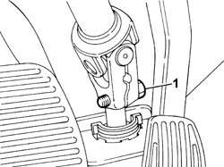
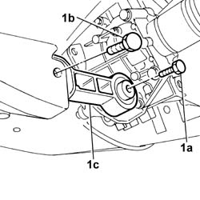
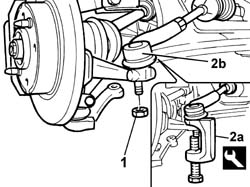
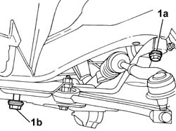
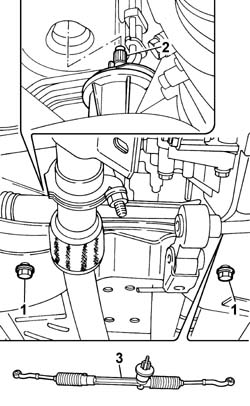

4120A10 steering box - r+r - check wheel tow-in if necessary separately
- Path
- Procedures > 41 STEERING > 4120 STEERING BOX > 4120A rack and pinion steering box > 4120A10 steering box - r+r - check wheel tow-in if necessary separately
- Kind
- repair procedure (removal / refitting; the operation number is the code)
- Applies to
- all engines; all production periods
- Interactive page
- https://sloeber94.github.io/elrnDB-fPnd/en/#/2752790
Applies to: all engines; all production periods
 Removing
Removing
 Refitting
Refitting1. Undo the bolt securing the steering column to the steering box.

Applies to: all engines; all production periods
Place the car on a ramp.
4450B12 front or rear wheels (two) - r+r
1. Unscrew retaining bolts (1a) and (1b), then remove the lower reaction link (1c).

Applies to: all engines; all production periods
1. Undo the nut securing the track rod end balljoints.
2. With the help of the tool (2a), remove the track rod ends (2b) from the housings in the steering knuckles.
 | Name | Country |
|---|---|---|
2a | Extractor | 1.871.000.700 |

Applies to: all engines; all production periods
1. Unscrew the upper retaining bolts (1a) and loosen bolts (1b) securing the suspension to the body.
Slightly lower the suspension frame and screw two service bolts of appropriate length in place of the bolts removed previously to support the suspension beam without the full weight being supported by the exhaust pipe.

Applies to: all engines; all production periods
1. Undo the bolts securing the steering box to the crossmember.
2. Release the casing sleeve from the hole in the body.
3. Remove the steering box by withdrawing it sideways to the gearbox side of the car.

Applies to: all engines; all production periods
Refitting
RemovingFit the steering box in its seating, passing it from the gearbox side between the shock absorber and the bodyshell.
Insert the steering box sleeve into in its hole in the body.
Tighten the bolts securing the steering box to the crossmember to torque.
 | Fastening | Component | Ø | Value (daNm) |
|---|---|---|---|---|
- | Bolt | STEERING BOX (RACK AND PINION) | M12 x 1.25 | 8 |
Adjust the stand to raise the suspension beam, unscrew the service bolts and replace them with the bolts removed previously.
Tighten the bolts securing the suspension crossmember to the body to torque.
| Fastening | Component | Ø | Value (daNm) |
|---|---|---|---|---|
- | Bolt | FRONT SUSPENSION SUBFRAME | M12 x 1.25 | 8 |
Fit the track rod ends on their seats in the steering knuckles.
Tighten to torque the nut securing the track rod end balljoints to the steering knuckles.
| Fastening | Component | Ø | Value (daNm) |
|---|---|---|---|---|
- | Nut | ADJUSTABLE STEERING LINKS | M10 x 1.25 | 4 |
Fit the lower reaction rod in its seat and tighten the bolts securing it to the suspension beam to torque.
| Fastening | Component | Ø | Value (daNm) |
|---|---|---|---|---|
- | Bolt | POWER UNIT BOTTOM REACTION ROD | M12 x 1.25 | (Crossmember side) 8 |
| Fastening | Component | Ø | Value (daNm) |
|---|---|---|---|---|
- | Bolt | POWER UNIT BOTTOM REACTION ROD | M12 x 1.25 | (Gearbox side) 8 |
4450B12 front or rear wheels (two) - r+r
Remove the vehicle from the ramp.
Tighten to torque the bolts securing the electric steering mounting to the steering box.
| Fastening | Component | Ø | Value (daNm) |
|---|---|---|---|---|
- | Bolt | STEERING SHAFT JOINT FASTENERS | M8 | 3.2 ÷ 4.2 |